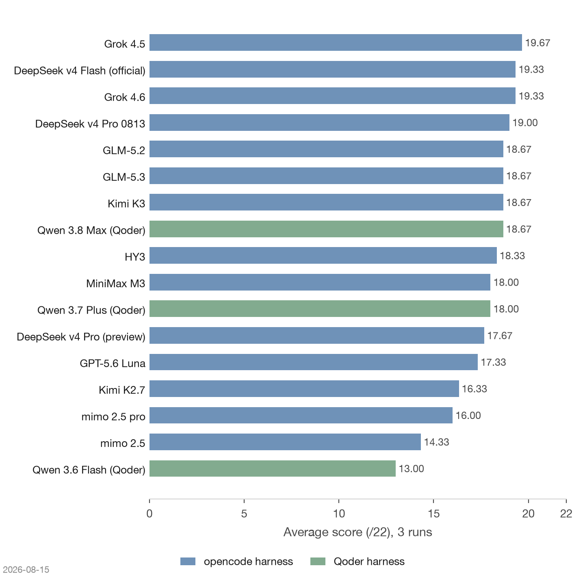
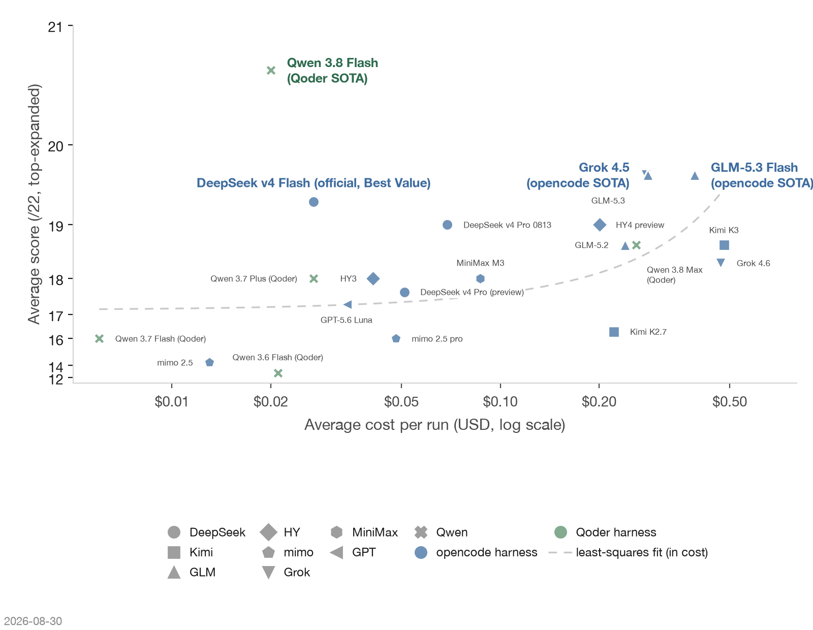
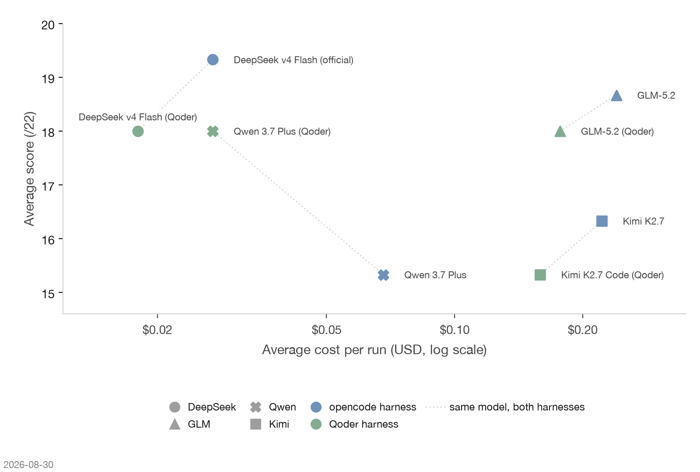

On LiveCuratorBench's Qoder harness round, Qwen 3.8 Max scored 18.67/22 over three runs (19/18/19)—first in the six-model field, ahead of a three-way tie at 18.00 between GLM-5.2, DeepSeek v4 Flash, and Qwen 3.7 Plus. Its edge concentrated in two rubric items: keeping the user-message anchor as a standalone knowledge entry (G6), and extracting the always-on inline rule (G7)—the only model that held both across all three runs. At 69.9 credits per run, about $0.26 at the subscription's effective price, it is also the most expensive model in this round; during the eval window its requests were offset by a platform promotion.


Four models in these charts ran on both harnesses; the pairing below isolates the harness effect on score and cost.

Methodology, per-model details, and the cost table are on the Qoder harness round page; the task itself is introduced on the LiveCuratorBench main page.